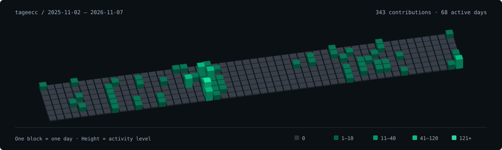

The contribution loop
tageecc / a rolling year of GitHub activity

Loading daily activity…
Use arrow keys to rotate, plus and minus to zoom, and Home to reset. Select a date below to inspect its block.
Explore daily activity by date
Counts include commits, pull requests, reviews and issues, not just commits.
3D rendering adapted from TokenTracker · MIT license